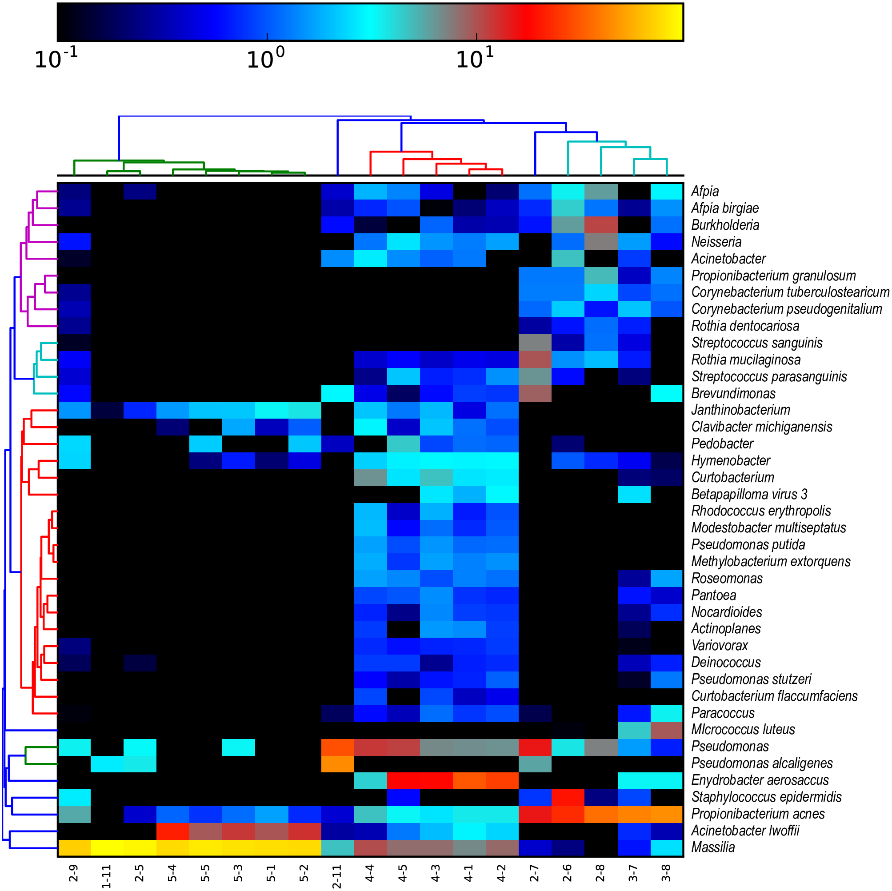

11. Taxonomic Classification with MetaPhlAn
In this section, we will dive into the practical aspects of read-based taxonomic classification using MetaPhlAn, a popular tool for profiling the taxonomic composition of metagenomic samples. MetaPhlAn stands for “Metagenomic Phylogenetic Analysis” and is widely used for its accuracy and efficiency in characterizing microbial communities from shotgun metagenomic sequencing data.
What is MetaPhlAn
MetaPhlAn is a tool developed by the Segata Lab for taxonomic profiling of metagenomic samples. It uses unique clade-specific marker genes to identify and quantify the presence of microbes in a given metagenomic dataset. The output of running MetaPhlAn is a relative abundance table which can be visualised in various ways. You can (should) read more about it on it’s github page: https://github.com/biobakery/MetaPhlAn.
Installing MetaPhlAn
We can use conda to install the latest version of MetaPhlAn as we learnt before. Detailled instructions on installing the tool can be found at https://github.com/biobakery/MetaPhlAn/wiki/MetaPhlAn-4#installation.
conda create --name metaphlan python=3.7
conda activate metaphlan
conda install -c bioconda metaphlanWe will also need to download MetaPhlAn’s required databases. This can be done with:
metaphlan --install --bowtie2db <database folder>Replace
Running MetaPhlAn
To perform taxonomic classification with MetaPhlAn, you’ll need to provide it with metagenomic sequencing data in FASTQ format.
For single-end reads:
metaphlan input.fastq --input_type fastq --bowtie2out metagenome.bowtie2.bz2 --nproc 8 -o profiled_metagenome.txt For paired-end reads:
metaphlan input_1.fastq,input_2.fastq --bowtie2out metagenome.bowtie2.bz2 --nproc 8 --input_type fastq -o profiled_metagenome.txt- The flag
--bowtie2outsaves the intermediate alignment files into metagenome.bowtie2.bz2. This allows us to rerun metaphlan extremley quickly. - The flag
--nprocspecifies how many CPUs we allocate to metaphlan. Generally, more CPUs the faster it will run but this depends on your computer’s specifications. - Metaphlan can also estimate the unknown fraction of the metagenome using the percentage of reads mapping to their database to scale the relative abundance profiles. This can be enabled with the
--unclassified_estimationflag.
The output of metaphlan is two column tab seperated text file. The first column contains the different microbial clades that have been predicted whilst the second column contains the corresponding relative abundances (%). If we look inside profiled_metagenome.txt this is what we would see:
# Database version
# Metaphlan command executed
# Number of reads processed
# SampleID Metaphlan_Analysis
# clade_name NCBI_tax_id relative_abundance additional_species
UNCLASSIFIED 5.7891
k__Bacteria 2 84.6758
k__Bacteria|p__Actinobacteria 2|201174 45.8922
k__Bacteria|p__Proteobacteria 2|1224 23.1078
k__Bacteria|p__Actinobacteria|c__Actinobacteria 2|201174|1760 44.6724
k__Bacteria|p__Proteobacteria|c__Betaproteobacteria 2|1224|28216 22.0178
...The first five rows which begin with # are header rows which give more information about your metaphlan run. The last header row contains four headers for each of the columns below it: * clade_name - The taxonomy of the clade reported on this row. Each taxonomic level is indicated by a prefix: Kingdom - k__, Phylym - p, Classs - c, Order - o, Family - f, Genus - g, s - species, species genome bin (SGB) - t__. * NCBI_tax_id - The corresponding NCBI taxon ID for the clade in clade_name. * relative_abundnace - The clade’s relative abundance in %. Clades are hierarchally summed meaning each taxonomic level will equal 100%. Note that if unclassifed estimation is performed, each taxonomic level will add up to 100% minus unclassified percentage. * additional_species - In cases where a clade is represented by multiple species, alternative species names are listed in this column. clade_name still lists the representative species.
Lets use grep to find out more about our family of interest - Enterococcaceae.
grep "Enterococcaceae" profiled_metagenome | head -1Note: We use the pipe | symbol for the first time here. This command redirects the output of the command before it to the command after it allowing us to chain commands together. In the example above the grepped text is fed into the head command which returns us just the first line of the grep output.
This yields:
k__Bacteria|p__Firmicutes|c__Bacilli|o__Lactobacillales|f__Enterococcaceae 2|1239|91061|186826|81852 14.517849033370496This output shows that info about the family Enterococcaceae in our metagenome was successfully extracted, with it making up 14.5% of its composition.
Merging metaphlan profiles
In most studies we will be investigating the taxonomic profile of multiple metagenomic samples. Therefore it is useful to combine multiple metaphlan outputs into a matrix for comparison and visualisation. Fortunately, metaphlan includes an utility script for this exact purpose:
merge_metaphlan_tables.py *.txt > merged_abundance_table.txtThis merged table only retains sample names, clades names, and relative abundances. You can easily view this file as a spreadsheet using Excel or with less.
# -S is the less flag for chopping off the ends of lines when they are longer than the screen width instead of wrapping. I find that this often makings files like merged metaphlan files much easier to read.
less -S merged_abundance_table.txtThe first few lines would look like this:
#mpa_vJan21_CHOCOPhlAnSGB_202103
clade_name Sample_1 Sample_2 Sample_3 Sample_4
UNCLASSIFIED 10.2 9.43 2.98 4.44
k__Bacteria 88.2 90.4 80.04 87.99
k__Bacteria|p__Bacteroidetes 75.78146 2.342 23.1323 10.41
k__Bacteria|p__Firmicutes 11.84254 3.12346 43.1642 69.96495
k__Bacteria|p__Bacteroidetes|c__Bacteroidia 73.78146 2.2123 20.09994 10.41Visualising taxonomic profiles.
The most common and widely applicable method for visualising taxonomic profiles such as those produced by metaphlan is with a heatmap.
The first step of making a heatmap is to decide what taxonomic level you want to visualise at. This will depend on the goal of your study and what you want to display in your figure. For this example we will use the species level.
To extract only species level clades from our merged table we use the following command:
grep -E "clade|s__" merged_abundance_table.txt | grep -Ev "t__" | sed "s/^.*s__//g" > merged_abundance_table_species.txtThis command first uses grep to extract the header line by matching “clade” and all rows with species assignments. The second grep removes lines which have been resolved to SGB level leaving us with only species level clades. The sed command removes everything before and including “s__” leaving us with only the species name in the clade_name column (You can read more about the sed command here). The > redirects the output of the chain of commands to the file merged_abundance_table_species.txt instead of just printing it out (You can read more about redirect outputs here).
The first few lines of the new file looks like this:
clade_name Sample_1 Sample_2 Sample_3 Sample_4
Enterococcus_faecium 22.09729 1.13 0.0 3.334
Parabacteroides_distasonis 0.0 1.52429 11.4621 0.0
Bacteroides_fragilis 16.21854 2.8948 0.0 0.0
Methanobrevibacter_smithii 0.0 0.0 19.34642 0.0 Visualising taxonomic profiles with a heatmap
This data is now ready for visualisation. There are many different ways to produce a heatmap, especially if you have experience with data focused programming languages like python or R. Most methods are very comparable and only differ in aesthetics. In this tutorial we’ll be using hclust2 which can be installed via Conda.
*I’ve been informed that hclust2 might not play nicely with ARM based hardware such as Apple’s M series Macs. If you do encounter issues with this and have some experience with R programming, a good alternative tool is pheatmap. A good guide on hierarchical clustering and creating heatmaps with pheatmap is linked here. If you’re just following the code, you can start at the “Removing Non-Numeric Labels” section, as our metaphlan output is already in matrix form.
conda install -c biobakery hclust2Check if the tool has been installed correctly and have a look at the available flags with hclust2 --help.
To invoke the hclust2 python script and create a heatmap based on the species level table we generated earlier we can run the folliwng command:
hclust2.py \
-i merged_abundance_table_species.txt \
-o metaphlan_heatmap_species.png \
--f_dist_f braycurtis \
--s_dist_f braycurtis \
--minv 0.1 \
--ftop 50 \
--cell_aspect_ratio 1 \
--flabel_size 10 |
--slabel_size 10 \
--max_flabel_len 100 |
--max_slabel_len 100 \
--dpi 300This script takes our table as input with the -i flag and outputs a heatmap png file as detailed with the -o flag. For our distance functions we have selected Bray-Curtis dissimilarity for both our features (--f_dist_f), which in this case are our species and our samples (--s_dist_f). Bray-Curtis is a commonly used index which is used to assess how similar two samples are. It is particularly useful because it can handle the presence of zeros i.e. samples containing a relative abundance of 0 for certain species. A Bray-Curtis dissimilarity of 0 indicates that two samples have exactly the same composition, and a value of 1 indicates that their composition does not overlap at all. We then use the flags --minv and --ftop to set the minimum abundance value to be display and to only show the top 50 species in the heatmap. The rest of the flags affect the aestehtics of the heatmap. Can you work out what they affect?
Here’s an example of a heatmap created this way from a real published paper:

Can you identify what the most abundant taxa in this heatmap is?
Can you identify any clustering of samples?
Do you notice any differences between the data used to create the heatmap here and the data we prepared ourselves?